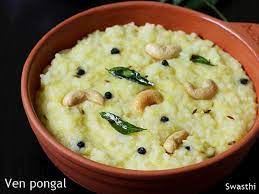

Pongal

Description
Today we are going to make tasty Ven-Pongal
Ingredients
- 2 tbsp ghee / clarified butter
- 1 tsp cumin / jeera
- ½ tsp pepper (crushed)
- 1 inch ginger (finely chopped)
- 2 chilli (slit)
- 10 cashew / kaju (halves)
- pinch hing / asafoetida
- 1 tsp ghee / clarified butter
- ½ cup rice (rinsed)
- ½ cup moong dal (rinsed)
- 4 cup water
- ½ tsp salt
Steps
- firstly, in a pressure cooker heat 1 tsp ghee.
- add ½ cup rice, ½ cup moong dal and saute for a minute or until it turns aromatic.
- further, add 4 cup water and ½ tsp salt. mix well.
- cover and pressure cook for 5 whistles on medium flame.
- once the pressure settles down, open the cooker and give a good mix.
- furthermore, in a pan heat 2 tbsp ghee.
- also add 1 tsp cumin, ½ tsp pepper, 1 inch ginger, 2 chilli, 10 cashew and pinch hing.
- saute on low flame until cashew turns golden brown.
- pour the tempering over cooked rice and dal mixture.
- give a good mix, add more ghee if required.
- finally, serve ven pongal/khara pongal with coconut chutney and sambar.